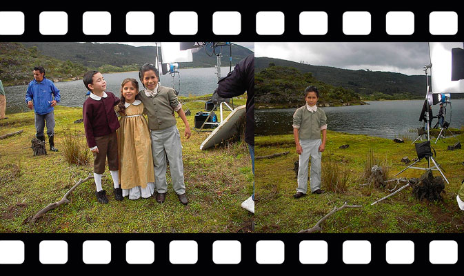
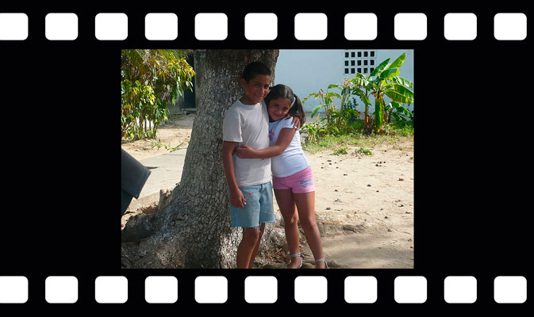
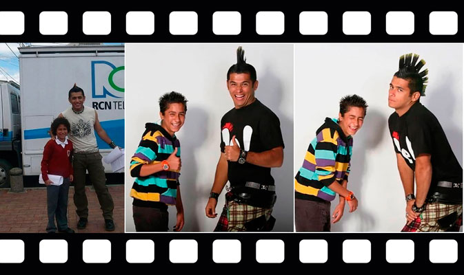

Jesús Forero
Por: Jerrika Lozano
 @chucho_forero
@chucho_forero
 Chucho Forero
Chucho Forero
 @chuchoforero
@chuchoforero
El actor de 22 años de edad, reconocido por su papel de “El Tigre” en la producción El Man es Germán, trabaja en lo que lo apasiona: Participó en producciones como La Marca del Deseo, Amor Sincero, Lady La Vendedora de Rosas y, recientemente, en Sin Senos Sí Hay Paraíso con el personaje de “Trenzas”. Además de la actuación, trabaja con el Ministerio de Defensa como personalidad, viajando a poblaciones vulnerables para ayudar a jóvenes y niños a desmovilizarse de las armas y de los “odios” en su corazón.
Jesús está enamorado y pronto se casará. Así lo confesó en una entrevista donde reveló el nombre de su prometida, Jhoana Soler, de quien dijo: “Es modelo y está estudiando. Fue alumna mía hace cinco años, cuando empecé a hacer pedagogía. Nos encontramos hace un año y nos conocimos más. Ella tiene una bebé de dos años y le ha tocado salir adelante sin el papá de la pequeña”.
- Grabación en Mondoñedo con ocho años, preparándose para grabar El Zorro,La Espada y La Rosa.
- En Santa Marta, grabando La Vida de Marbelle al lado de Rafaela, hija de la talentosa cantante de tecnocarrilera.
- Selfie en camerino antes de salir a un show de teatro y baile con sus compañeros de estudio, en la academia Sueños, donde estudió por diez años.
- Primer foto estudio, aunque estaba muy nervioso su profesionalismo y entrega eran evidentes a la hora de posar.
-
Primeros ensayos a sus trece años, grabación El Man es Germán junto al actor Santiago Alarcón.
- En la vida siempre hay tiempo para todo, por eso Jesús se ve en esta fotografía disfrutando de una tarde de jetsk y en San Andrés, antes de iniciar su trabajo en teatro en el 2013.
Nuestros mejores deseos para este talentoso actor en esta nueva etapa de su vida.